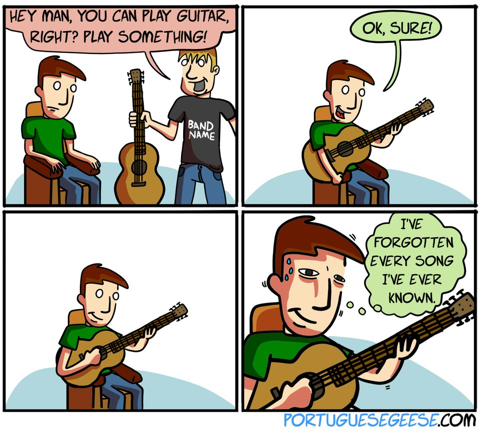

Am I a real musician yet?

I’ve been asking myself this question for awhile. A lot of times, I don’t even realize
I’m still asking it – it’s more of a non-conscious thing.
Hi, my name’s Ryan. I play the guitar. This is the brief story (if you can call it that) of my
experience learning music.
My beginnings
I always had an interest in music as a young kid. Maybe it was just the bloodlines. My dad and all five of
his siblings played instruments while I was growing up. Memories of soothing, folky guitar melodies and
three-part vocal harmonies are my main recollection from all the family get-togethers and camping
trips.
Third grade was the first year that my elementary school allowed kids to enter the school band.
I remember getting to come to this little “open house” thing where they let all the new third-graders
get their feet wet with various instruments. I remember trying a trumpet and trombone. I was excited.
Alas, the band practiced early in the morning before school. Mom said she didn’t think I’d be able to
get up that early…at least, that was her story. I still think there were ulterior motives at work there.
So as the universe would have it, I didn’t get starting actually playing an instrument until I was 19
and in college. That was when I decided to pick up the guitar on my own and give it a try. I found a couple
old chord books and discovered the world of online guitar tablature. The first tune I ever learned was
“Run-Around” by Blues Traveler. The way I learned it, it was just a simple repeating four-chord progression.
But man, when I finally got that song under my belt, I felt on top of the world. I quickly sought out more
resources to learn. I looked up obscure tabs from lesser-known bands that I liked. I even enrolled in a few
basic music courses at the college I was attending. My dad encouraged me to get a teacher, but that sounded way
too scary. No, not yet. I just need to get a little bit better – just enough to where I knew I could hold my
own. Once I get my feet under me, get a little confidence to play in front of a stranger – then I’ll be
ready for a teacher.
A long hiatus
That moment never happened. No matter how much I practiced, it never felt like I was good enough.
“I suck” was the prevailing musical headline in the newspaper of my mind. And I was still a
nervous wreck playing in front of other people, so my playing remained strictly a dorm-room hobby.
Looking back, this was probably my first major experience with the dreaded “Imposter Syndrome.”
I assumed everyone else was better and more knowledgeable than me. I also assumed this could only
be a bad thing, a shameful thing, and it ultimately kept me from connecting with others who played
and loved music.
As time went on, my interest in music never disappeared, but slowly, my dedication to practicing did.
I was a college kid who was – rather literally – late to the party, but now I was starting to discover
the world of drugs and alcohol. That was a turning point towards a dark, unhappy period of my life –
but that’s another story for another day. In a musical context, the main consequence of this development
was that I put down my guitar and didn’t touch it again for another 5-6 years. Every now and then I would
get a rush of guilt-filled nostalgia, remembering the fun of playing and feeling the sting of regret knowing
that I’d let what I’d learned deteriorate to the point where I no longer considered myself a guitarist.
Back in action!

Eventually, though, good things happened. After years of falling on my face, I picked myself up and
started forging ahead. In trying to reclaim my identity, guitar was one of the major things I wanted to get
back. At age 27, I started playing again for a few months and getting my chops back. I continued this for
about a year, then realized I was starting to run into some of the same mental walls as before. So I did what,
to me, was previously unthinkable: I reached out and found a teacher.
Getting a teacher didn’t magically turn me into a better player, but it was incredibly beneficial to me in a
number of ways. My teacher helped me learn that it was okay to mess up and okay to not know everything -
or not to know lots of things!.
He introduced me to ways of learning and to fundamental musical concepts that I just hadn’t come across
on my own. He exposed me to a ton of new music and genres that I’d never explored before. And, maybe most
importantly, he got me playing with other people. I got the opportunity to come and learn some sets with his
bandmates, which we played over in his drummer’s basement. That was super stressful to me, but the feeling
afterwards was so rewarding. Eventually, after several years, I worked up the nerve to take up my Aunt Sue
on one of her offers to play out. She normally played out several times a year at farmer’s market’s, coffee shops,
and various other low-key establishments, and she’d always welcomed me to come out and play along with her,
but up until now I’d never said yes. So last spring, I finally took the plunge and played out for the first time.
You can see a brief clip below:
I could count on one hand the number of times I’ve been more nervous than I was on that morning.
But it went fine. I made mistakes, but nothing terrible happened. Nobody threw tomatoes. The world didn’t blow up.
And you know what? We made some good noise. Obviously, with her angelic voice, my aunt’s the star of the show –
but I hung in there. I felt like I contributed something. And I had fun.
The journey forward
Maybe in 10 years. Maybe.
Since then, I’ve played out a handful of other times with Sue. Each time, I get a little more confident.
I’ve learned to accept that progress is a marathon, not a sprint, and that it never happens in a nice, neat,
linear fashion. So…am I a “real” musician now? I still wonder. The imposter syndrome still gets me sometimes.
But until I find out, I think I'll keep playing.
Some of my influences
Here are a few of my musical influences. Click on the picture for a sample song. Click on the artist
name for an article.